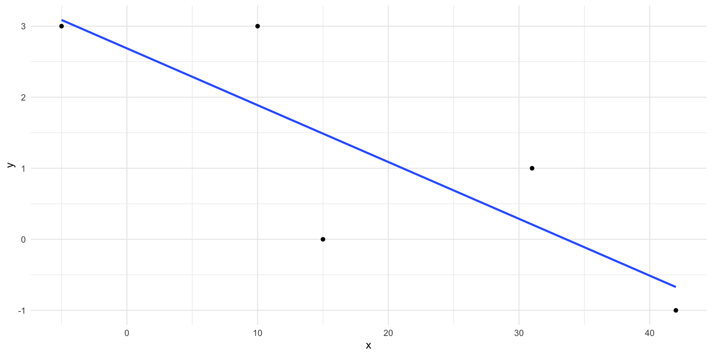
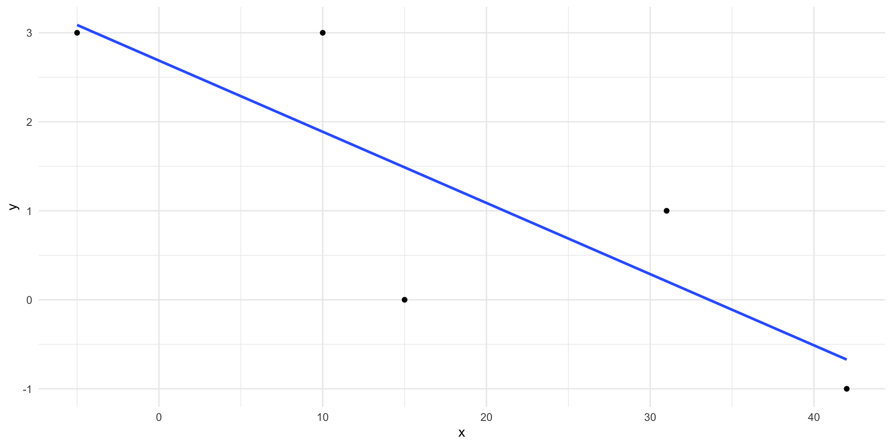
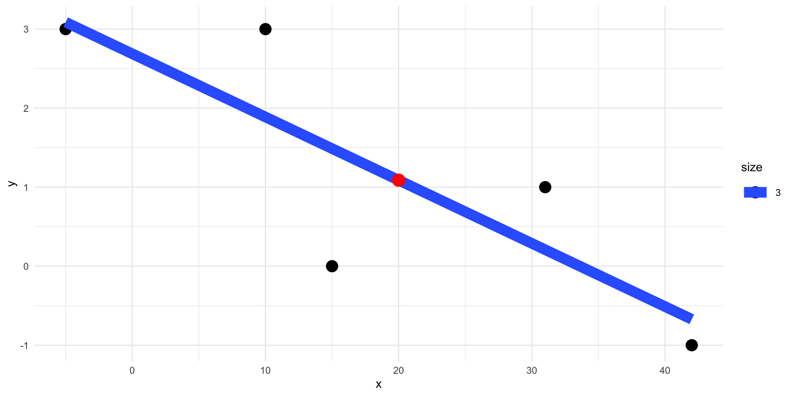

x <- c(-5, 10, 15, 31, 42)
y <- c(3,3,0,1, -1)
model <- lm(y~x)
qplot(x,y)+geom_smooth(method="lm", se=F)
x <- c(-5, 10, 15, 31, 42)
y <- c(3,3,0,1, -1)
model <- lm(y~x)
qplot(x,y)+geom_smooth(method="lm", se=F)
summary(model)
Call:
lm(formula = y ~ x)
Residuals:
1 2 3 4 5
-0.08772 1.11210 -1.48796 0.79185 -0.32828
Coefficients:
Estimate Std. Error t value Pr(>|t|)
(Intercept) 2.68778 0.79939 3.362 0.0437 *
x -0.07999 0.03223 -2.481 0.0892 .
---
Signif. codes: 0 '***' 0.001 '**' 0.01 '*' 0.05 '.' 0.1 ' ' 1
Residual standard error: 1.182 on 3 degrees of freedom
Multiple R-squared: 0.6724, Adjusted R-squared: 0.5632
F-statistic: 6.158 on 1 and 3 DF, p-value: 0.08916Residualet: Avstand fra den faktiske \(y\) verdien til den \(y\) som modellen predikerer (på linja)
\(R^2\): Andel av variasjonen i \(y\) som kan forklares av \(x\) (to versjoner). Jo høyere, jo bedre er linja som forklaringsmodell
Dersom vi har en ny verdie, \(x=20\) kan vi bruke linja til en kvalifisert gjetning på hva \(y\) vil være:
yhat <- predict(model, newdata=data.frame(x=20))
yhat 1
1.088017 qplot(x,y, size=3)+geom_smooth(method="lm", se=F)+geom_point(aes(x=20, y=yhat),size=5, color="red")
Vi ønsker å studere en kontinuerlig variabel \(y\). Denne kalles den avhengige variabelen.
Vi forklarer variasjonen i \(y\) ved hjelp av en enkel forklaringsvariabel \(x\) og en lineær sammenheng
\[ y = \beta_0+ \beta_1 x + \epsilon\]


Kan fikses ved å ta med \(x^2\) som uavhengig variabel

Kan fikses ved å bruke en robust estimator av White-typen
Przybylski, A. & Weinstein, N. (2017). A Large-Scale Test of the Goldilocks Hypothesis. Psychological Science, 28, 204–215.
Storskala studie som finner støtte til “Goldilocks” hypotesen.
Dataene er tilgjengelige her
Vi ønsker å studere trivsel. Det er vår avhengige variabel:
Trivsel målt med Warwick-Edinburgh Mental Well-Being Scale (WEMWBS). Spørreskjema med 14 items og 5 responsnivå. Vi bruker summescoren

Vi har 71033 deltagere! La oss tenke på dette som POPULASJONEN
popmodel <- lm(tot_wellbeing~ tothours, data=populasjon)
popmodel %>% tidy() %>% kable(digits=2)| term | estimate | std.error | statistic | p.value |
|---|---|---|---|---|
| (Intercept) | 50.31 | 0.09 | 585.03 | 0 |
| tothours | -0.81 | 0.02 | -43.99 | 0 |
En time ekstra daglig mobilbruk gir en forventet nedgang i trivsel på 0.81

| term | estimate | std.error | statistic | p.value |
|---|---|---|---|---|
| (Intercept) | 50.89 | 1.09 | 46.55 | 0 |
| tothours | -0.93 | 0.23 | -4.01 | 0 |
Ganske likt populasjonsverdiene! Vi har linearitet.

Her har vi tilnærmet homoskedastisitet!
Her er fire andre utvalg av størrelse \(n=400\). Vi ser at intercept og slope varierer endel!

En enkel uvidelse av enkel regresjon, der vi har flere uavhengige variable
\[ y = \beta_0+ \beta_1 x_1 + \beta_2 x_2+ \beta_3 x_3+ \epsilon\] Her har vi TRE forklaringsvariabler \(x_1,x_2, x_3\) som forklarer hvorfor \(y\) varierer!
Ceteris paribus [keːˈtɛ.riːsˈpa.rɪ.bʊs] latinsk for “alt annet likt”
I multippel regresjon får vi effekten av en variabel på \(y\), “alt annet likt”. Vi kontrollerer for de andre variablene!
For eksempel: \[ y = 1+ 2 \cdot x_1 - x_2+ 0.5 \cdot x_3+ \epsilon\] Når \(x_1\) øker med 1 enhet, så øker \(y\) med 2 enheter, alt annet likt. Dvs at vi holder \(x_2\) og \(x_3\) fast, og får isolert sammenhengen mellom \(x_1\) og \(y\).
Gutter har høyere trivsel (6.5 poeng) og lavere mobilforbruk:
utvalg %>% group_by(male) %>%
summarise(wbsnitt=mean(tot_wellbeing),
tothoursnitt=mean(tothours))# A tibble: 2 × 3
male wbsnitt tothoursnitt
<fct> <dbl> <dbl>
1 0 44.5 4.52
2 1 51.0 3.89Vi tar med kjønn som forklaringsvariabel. Dette er en kategorisk variabel, vi koder den med en dummy variabel: male=0 betyr jente, male=1 betyr gutt.
kategoriske variabler kan kodes med dummyvariabler i regresjon. Dersom vi har \(K\) kategorier, trenger vi \(K-1\) dummy variabler:
\[ \text{tot_wellbeing} = \beta_0+ \beta_1 \cdot \text{tothours}+ \beta_2 \cdot \text{male}+\epsilon\]
multmodel <- lm(tot_wellbeing~ tothours+male, data=utvalg)
multmodel %>% tidy() %>% kable(digits=2)| term | estimate | std.error | statistic | p.value |
|---|---|---|---|---|
| (Intercept) | 47.57 | 1.14 | 41.74 | 0 |
| tothours | -0.69 | 0.22 | -3.08 | 0 |
| male1 | 6.07 | 0.88 | 6.92 | 0 |
| term | estimate | std.error | statistic | p.value |
|---|---|---|---|---|
| (Intercept) | 47.57 | 1.14 | 41.74 | 0 |
| tothours | -0.69 | 0.22 | -3.08 | 0 |
| male1 | 6.07 | 0.88 | 6.92 | 0 |
Effekten av telefonbruk er litt mindre når vi kontrollerer for kjønn (-0.934 \(\rightarrow\) -0.688 )
Og effekt av kjønn på trivsel, når vi kontrollerer for telefonbruk, er lavere nå, 6.07. Så noe av den observerte trivselforskjellen på 6.5 kan forklares ved at guttene er mindre på mobil, og at mobil ikke er bra for wellbeing!
I intro statistikk så lærer man anova. - Du har flere grupper i populasjonen - Du lurer på om \(y\) har samme gjennomsnitt i alle gruppene - \(H_0:\mu_1=\mu_2=\cdots=\mu_g\) - Alternativhypotesen er at gruppegjennomsnittene ikke alle er like!
Vi antar at i utvalget var det 4 skoler. Vi ønsker å teste om well-being er den samme på alle skolene:
aov(tot_wellbeing~ school, utvalg) %>% tidy() %>% kable(digits=2) | term | df | sumsq | meansq | statistic | p.value |
|---|---|---|---|---|---|
| school | 3 | 92.19 | 30.73 | 0.38 | 0.77 |
| Residuals | 396 | 32388.05 | 81.79 | NA | NA |
Vi har ikke støtte for å hevde at det er forskjell i well-being mellom de 4 skolene (p-verdi=.77 vi beholder \(H_0\))